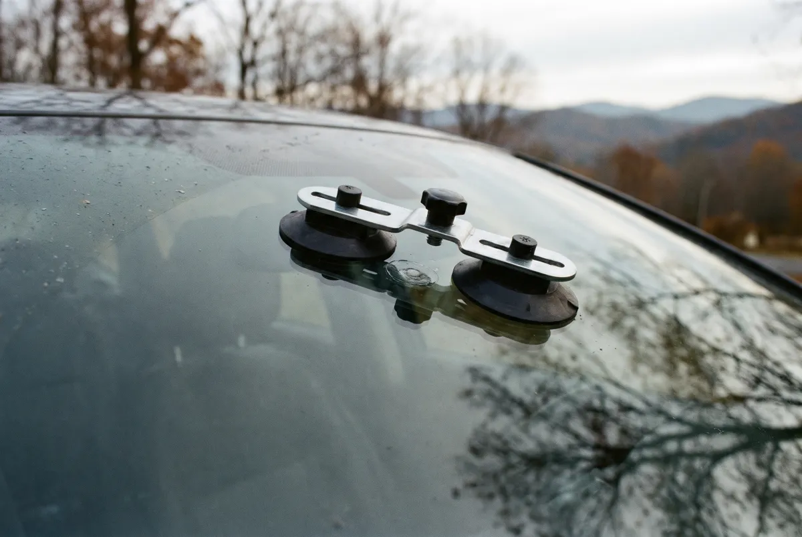
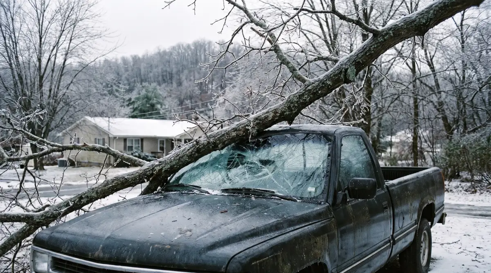

Our services
Auto Glass Services in Knoxville
Every service is done where your car is parked. Pick the one that matches your damage, or see the full list of Knoxville auto glass services.

Windshield Replacement
New front glass for long cracks, edge cracks and damage in the driver’s view.
About windshield replacement →
Windshield Chip Repair
Resin repair that seals a fresh chip before the cold spreads it.
About windshield chip repair →
Car Window Replacement
Door, quarter and back glass replaced, with the broken glass cleaned up.
About car window replacement →
Storm Damage Auto Glass
Glass broken by ice-heavy limbs, hail or flying debris, handled fast after the storm.
About storm damage auto glass →
ADAS Camera Calibration
Lane-keep and auto-braking cameras re-aimed after a new windshield.
About ADAS camera calibration →